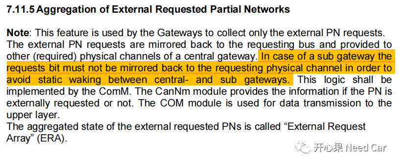
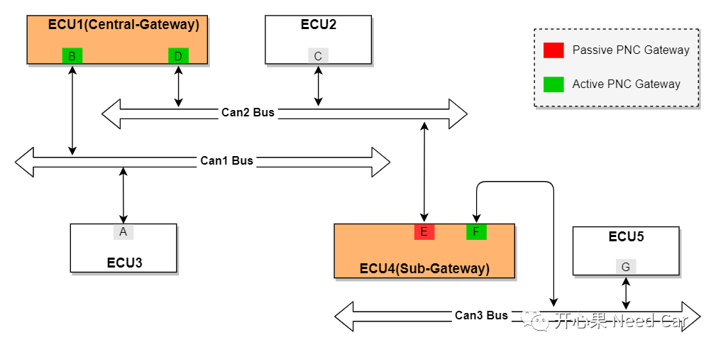
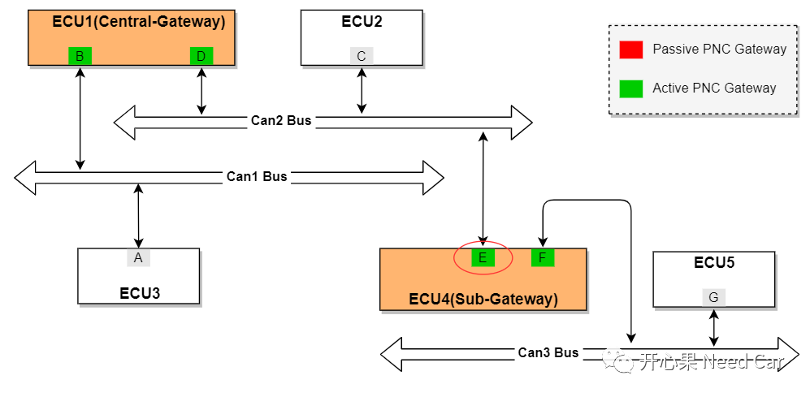
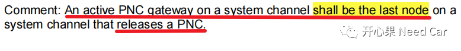
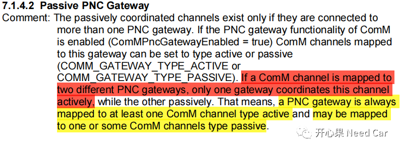

Q1：ERA、EIRA谁针对网关节点？
对于网关节点，则会涉及到ERA的配置，为什么这样说呢？充当网关节点的ECU，意味着此ECU包含多个物理通道，eg:2路CAN、1路Flexray等。当网关节点的某一路（eg:CAN1）收到PNC #n和其他路关联时（eg:CAN2），网关节点需要承担主动唤醒CAN2的责任，因此需要PNC信息路由，此时需要ERA将CAN1收到的PNC #n信息给到CAN2。更多细节可以参考前文Autosar网络管理：主动唤醒源/被动唤醒源与网络主动唤醒/被动唤醒的关系。 对于非网关节点，没有路由PNC信息的任务，使能EIRA功能即可。
Q2：对于ERA，为什么6个通道8个PN，需要48 个计时器？
Q3： 外部PN请求被镜像回请求总线，并提供给中央网关（必需的）物理通道。在子网关情况下，请求位不得镜像回请求的物理通道，以避免中央网关和子网关间的静态唤醒。如何理解这里的"镜像"？
A3：如上这段话的出处先了解一下，如下所示：

解释：
子网关收到PNC #n信息，发送网络管理报文时，不要将PNC #n发送到接收的物理通道。比如：ECU4::E节点收到ECU2::C节点的PNC #n，ECU4::E在发送网络管理报文的时候就不要置位PNC #n（=1）。而中央网关，如：ECU1::D需要将收到的PNC #n发送回CAN2 Bus。为什么子网关不能将PNC #n发送回对应的总线呢？
按照规范要求，一个网段内有一个Active PNC Gateway，其余的为Passive PNC Gateway，ECU1是中央网关（节点D为Active PNC Gateway）、ECU4是子网关（节点E设计为Passive PNC Gateway），5个ECU的关联关系如下所示：



先消化一下Autosar的这个解释，如下所示：

“镜像”就是将从总线收到的PNC #n信息再发送到总线。

参考资料
SIMPLE TITLE
AUTOSAR_SWS_COMManager.pdf
AUTOSAR_SWS_CANNetworkManagement.pdf
往期精彩回顾